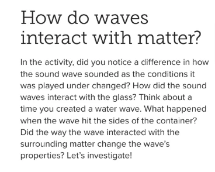
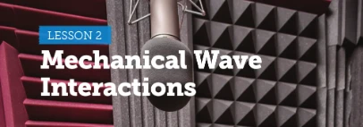
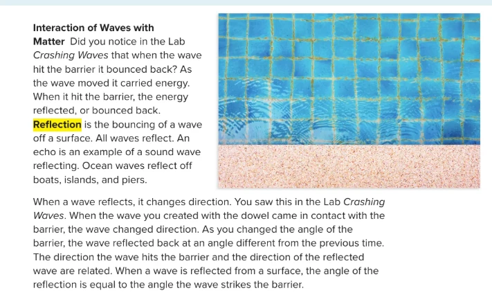
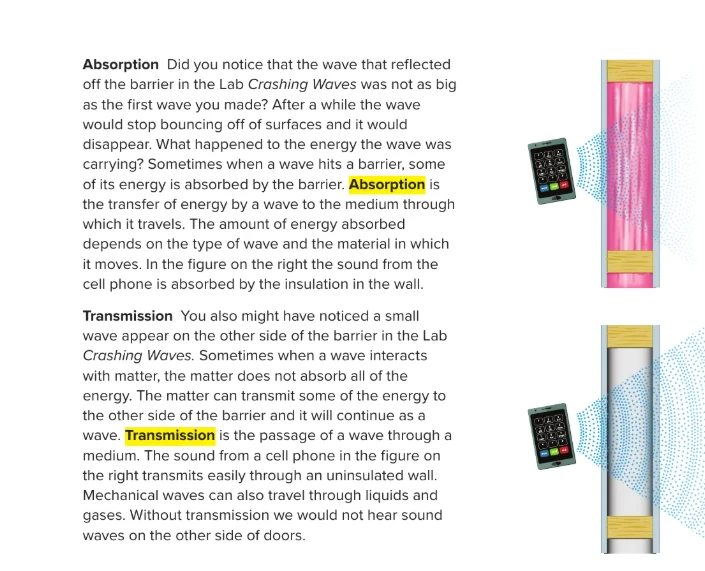
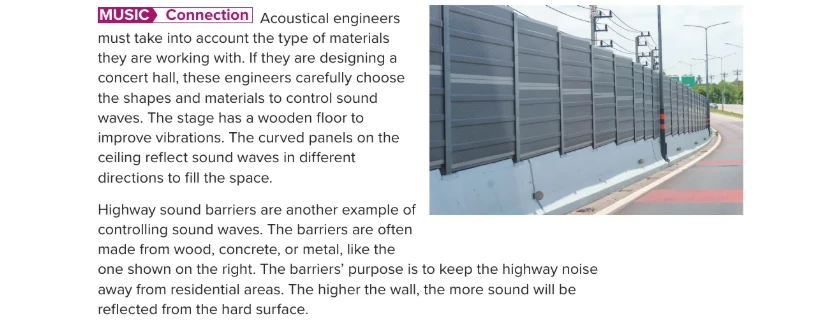

Reflection, Absorption & Transmission
Lesson 2 · Mechanical Wave Interactions
Term 1 at a glance
Grade 8 Advanced Science · We are in Unit 1, Module 2: Introduction to Waves, now on Lesson 2: Mechanical Wave Interactions.

Meet your UAE Values Team
Five friends will coach you through today's wave-interactions mission. Tap a character to discover their job today!
Lesson map · 45 minutes · tap any activity
Objectives, success criteria & key words
Describe how waves are reflected, absorbed and transmitted by matter.
- I can define reflection and explain that a wave reflects at the same angle it strikes a barrier.
- I can define absorption and explain why soft, porous materials absorb more sound energy.
- I can define transmission and give examples of waves passing through a medium.
- I can explain how acoustical engineers and highway sound barriers control sound.
Kickoff: starter + attendance

- Say “present” and settle in your seat.
- Think: why does your voice sound different in an empty room than in a room full of furniture?
- Answer the 5 true/false questions on the next slide on your own: no peeking at a friend's answer!
Pre-assessment: what do you know?
Hook: the echoing majlis
Moving day in Al Ain…
Hamdan and Shamma's family move into a new villa. In the empty majlis, Hamdan calls out “Marhaba!”, and the room calls back: marhaba… marhaba…
A week later, the carpets, cushions and curtains arrive. Hamdan calls out again. This time there is no echo at all.
Same room, same voice. So where did the echo go?

Watch: reflection, absorption & transmission
A 2 min 46 s narrated video with subtitles. Turn the sound on, then listen for the three key words.
- Listen for: reflection, absorption, transmission.
- Notice the rule: angle in = angle out.
- Find out where Hamdan's echo went!
Encounter: reflect, absorb or transmit?
Tap a situation to sort it. Each tap moves it on: REFLECT → ABSORB → TRANSMIT. Then check with your partner.
Remember: most real surfaces do a bit of all three. We sort by what happens most.
Three things a wave can do (the unconventional version)
Throw a football at a concrete wall: it bounces back (reflection). Throw it into a soft sand dune at Liwa: it stops, and its energy goes into the sand (absorption). Kick it at a loose curtain: it pushes through to the other side, slower (transmission). Waves do all three!
Reflection is the bouncing of a wave off a surface.
Absorption is the transfer of energy by a wave to the medium through which it travels.
Transmission is the passage of a wave through a medium.
Textbook: how do waves interact with matter?

Textbook: reflection

Textbook: absorption and transmission

Textbook: music connection

Angle of reflection: angle in = angle out
In the lab Crashing Waves, you changed the angle of the barrier and the wave bounced off in a new direction. Scientists measure both angles from the normal: an imaginary line at 90° to the barrier.
Wall tester: reflect, absorb or transmit?
A phone plays music next to a wall. Choose a wall and watch what happens to the sound energy: some reflects, some is absorbed, some is transmitted to the room next door.
Echoes at Hatta Dam
An echo is a reflected sound wave. Sound travels at about 343 m/s in air. The sound must go to the cliff and back, so:
echo time = 2 × distance ÷ 343
Highway sound barriers: how high?
Traffic noise on a busy road can be about 75 dB. A hard barrier reflects the sound back towards the road. The taller the barrier, the more sound it reflects away from the homes.
Crashing Waves lab: barriers and waves
- Place the block across one end of the tray as a barrier.
- Wave-maker: gently roll the dowel once to make a straight wave.
- Observer: watch what the wave does when it hits the barrier.
- Turn the barrier to an angle and repeat. Then cover the barrier with the sponge and repeat. Record below.
| Barrier | What happened to the wave? |
|---|---|
| Straight block | Reflected straight back towards you. |
| Block at an angle | Reflected in a new direction, at the same angle it hit the block. |
| Block covered with sponge | A much smaller reflection: the sponge absorbed most of the energy. |
- Wave-maker: makes one gentle wave at a time.
- Observer: watches the barrier closely and describes the wave.
- Recorder: writes the results in the table.
Pause and check
Formative check: tap an answer. Wrong? Read the hint and try again!
Put the echo events in order
What happened in the empty majlis? Say the order with your partner, then tap the events from first to last. Tap a numbered event to undo.
Wave interactions worksheet (1/2)
B. The bouncing of a wave off a surface
C. The transfer of a wave's energy to the medium
D. A reflected sound wave that you hear
E. Someone who designs spaces to control sound
Wave interactions worksheet (2/2)
| Material or situation | Mostly… |
|---|---|
| A bare concrete wall in an empty room | |
| Foam panels in a recording studio | |
| A thin, uninsulated wall between two rooms | |
| A thick carpet in the majlis | |
| A metal sound barrier beside a highway | |
| Air carrying your voice to a friend |
Why did the echo disappear after the carpets, cushions and curtains arrived? Use reflection, absorption and energy.
✓ In the empty majlis, the hard, bare walls reflected most of the sound back: an echo.
✓ Carpets, cushions and curtains are soft and porous, so they absorb sound.
✓ Less energy was reflected, so the echo became too weak to hear.
Green, orange or purple? Choose your level
Green · Support
- Complete: “The bouncing of a wave off a surface is ____.”
- Circle: foam absorbs / reflects sound.
- True or false: an echo is a reflected sound wave.
- Which lets more sound through: a thin door or a thick concrete wall?
1. reflection
2. absorbs
3. True
4. a thin door
Orange · At level
- Draw a wave hitting a barrier at 40°. Draw the normal and label both angles.
- Why do recording studios cover their walls with foam?
- Give one example each of reflection, absorption and transmission in your home.
1. Both angles are 40°, measured from the normal; the reflected wave mirrors the incoming one.
2. Foam is soft and porous, so it absorbs sound energy instead of reflecting it as echoes.
3. e.g. an echo in an empty room; a carpet quietening footsteps; hearing the TV through a wall.
Purple · Challenge
- You shout at a cliff and hear the echo 2 s later. Sound travels at 343 m/s. How far away is the cliff?
- Design a quiet study room. Which materials would you use for the walls, floor and door? Explain.
- Why are highway barriers built higher near homes, and from hard materials?
1. 343 × 2 = 686 m there and back, so the cliff is 343 m away.
2. Carpet, curtains and foam panels absorb sound; an insulated wall and a solid door reduce transmission.
3. A higher wall blocks and reflects more sound; hard surfaces reflect noise back towards the road instead of transmitting it.
Summative: Wave Master quiz
Mystery solved!
In the empty majlis, Hamdan's voice hit hard, bare walls that REFLECTED most of the sound energy back to him as an echo. The carpets, cushions and curtains are soft and porous, so they ABSORBED much of the sound ENERGY. With less energy reflected, the echo became too weak to hear!
I can define reflection and explain that a wave reflects at the same angle it strikes a barrier.
I can define absorption and explain why soft, porous materials absorb more sound energy.
I can define transmission and give examples of waves passing through a medium.
I can explain how acoustical engineers and highway sound barriers control sound.
Which value did you show today?
Tap the character whose value you showed in this lesson. Then tell your partner one real example!
Let your kindness travel
Waves can bounce back, be absorbed or pass through. Let your kindness pass through to everyone you meet!